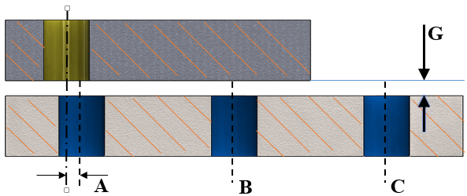

このルールは、穴の位置合わせをチェックします。
組立時の問題を回避するために、ファスナー用の穴については適切な位置合わせを十分に考慮する必要があります。
このルールは、CADモデル内で設計された穴が、相手部品にある他の穴と適切に位置合わせされているかどうかをチェックします。また、塞がれた穴や未使用の穴についても確認できます。
外部表面に存在する開口穴のみが、位置合わせチェックの対象となります。アクセス性条件はチェックされません。
直径が互いに50%以内の差である穴が、位置合わせチェックの対象として考慮されます。
ユーザーは、部品同士の間にある程度のすき間を持って組み立てられている部品についても、穴位置合わせルールをチェックできます。この場合、部品間のすき間の値を入力する必要があります。
穴を設計する際には、相手部品との関係における穴の位置や配置を考慮してください。設計者は軸方向の位置合わせを維持する必要があります。
穴位置合わせルールは、以下の3つの条件をチェックするために使用できます。
平行な軸上にある穴のペアで、軸方向にずれがある場合です。穴が部分的または完全に重なっているケースのみが考慮されます。このルールは、異なる2つの部品に属する穴の位置合わせをチェックします。

A = 軸ずれケース
B = 塞がれた穴のケース
C = 未使用の穴のケース
G = 部品間のすき間（穴が存在する2つの面間の距離）
他の部品の面によって塞がれている、部品上の穴をチェックします。
外気に開放されている部品上の貫通穴をチェックします。

穴が存在する部品の面同士の距離を示します。

G = 部品間のすき間（上図に示すように、穴が存在する2つの面間の距離）
注記:
このルールでは、位置合わせチェックの対象として、標準穴サイズデータベースで提供されている最大穴サイズ以下の穴サイズが考慮されます。
このルールは、トップレベルアセンブリ部品に対して、DFMPro 設定に基づいて実行できます。